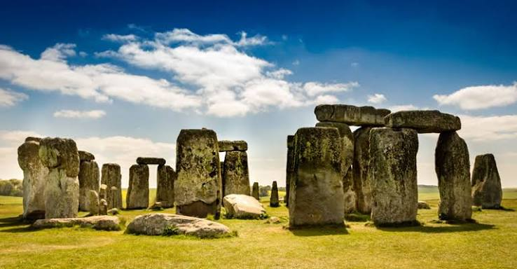

歴史をカタチに
私たちは今ある歴史を守り続けます。

NEWS
2026.06.12
POSSE城修築募金再開のお知らせ
昨年発生した地震の影響により中断していたPOSSE城の修築工事が、このたび再開されることとなりました。地震の影響で工事に大幅な遅れがみられており、今後の工事継続と文化財保護のため、修築募金の受付を再開いたします。・・・
続きを読む2026.05.25
ガウディツアーの応募人数変更について
2026年夏に開催予定の「ガウディ建築探訪ツアー」につきまして、多数のお申し込みをいただいております。これを受け、参加希望者の受け入れ枠を拡大し、募集人数を変更することを決定いたしました。・・・
続きを読む2026.05.01
ガウディツアーのご案内
世界遺産保護への理解を深めることを目的として、スペイン・バルセロナを巡るガウディツアーを開催いたします。サグラダ・ファミリアをはじめとする代表的な建築作品を見学しながら、専門家による解説を行います。・・・
続きを読む2026.04.20
富士山保全活動について
当団体では、世界文化遺産である富士山の自然環境保全を目的とした清掃活動を実施いたしました。地域住民やボランティアの皆さまの協力のもと、多くのごみを回収し環境美化に努めました。・・・
続きを読む2026.03.18
ピラミッド調査100年展のご案内
エジプト考古学の発展とピラミッド研究の歴史を振り返る特別展示会を開催いたします。過去100年間の調査資料や発掘成果を紹介し、研究の歩みを分かりやすく解説します。・・・
続きを読む2026.02.07
世界遺産検定講座の勧め
世界遺産について体系的に学びたい方を対象に、世界遺産検定対策講座を開講いたします。基礎知識から最新の登録動向まで幅広く学べる内容となっておりますので、ぜひご参加ください。・・・
続きを読む📞
お電話はこちら
TEL: 03-1234-5678
📩
メールはこちら
whs.2026.world
@gmail.com
当サイトはパソコンでの閲覧をメインに作られているため、
スマートフォンではサイトが正しく表示されない場合がございます。